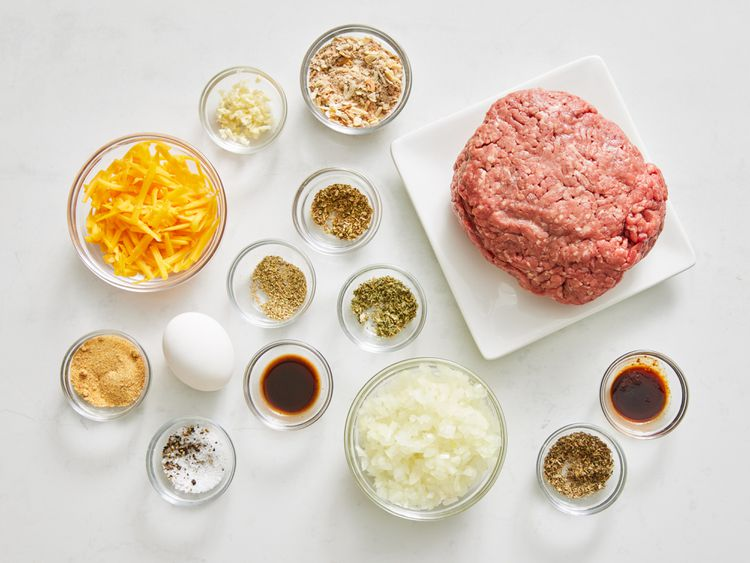
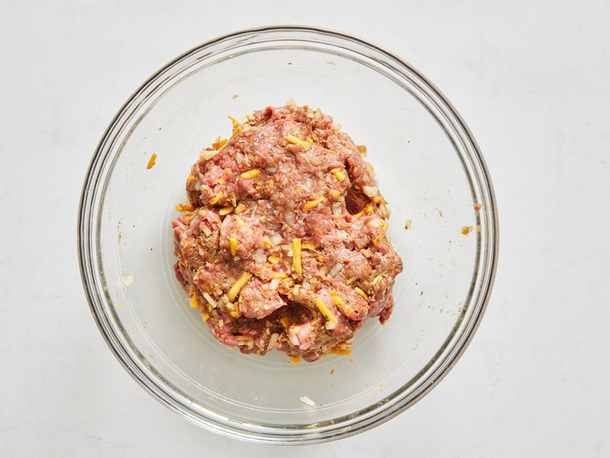
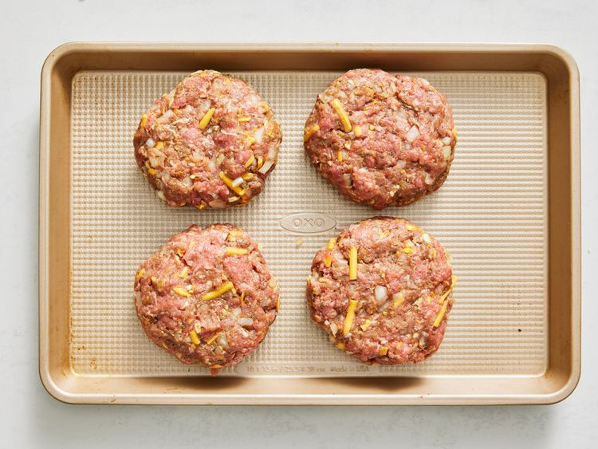
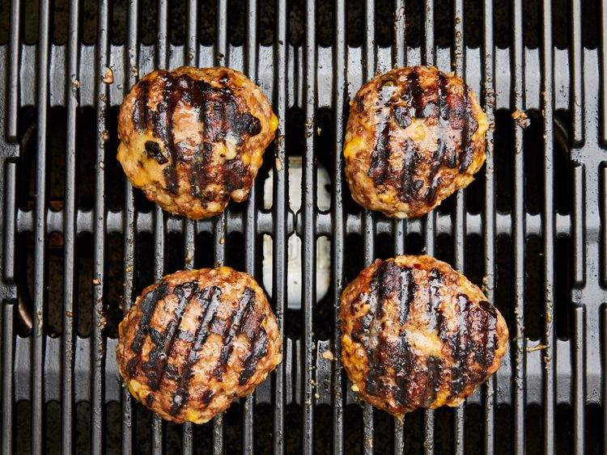

Home
Hamburger

Description
The best burger recipe for summertime grilling! This juicy burger is jam-packed with all kinds of stuff and has no tasteless bread crumbs. Serve on buns with your favorite condiments.
Hamburger Ingredients
These are the ingredients you’ll need to make this top-rated hamburger recipe:
- Beef: These basic burgers start with 1 ½ pounds of lean ground beef.
- Onion: A finely chopped onion takes the flavor up a notch.
- Cheese: You’ll need shredded Colby Jack or Cheddar cheese.
- Egg: An egg lends moisture and helps bind the patties together.
- Seasonings, herbs and Sauces: These hamburgers are flavored with an envelope of dry onion soup mix, fresh garlic, garlic powder, soy sauce, Worcestershire sauce, dried parsley, dried basil, dried oregano, crushed dried rosemary, salt, and pepper.
Steps
- Gather all ingredients. Preheat an outdoor grill for high heat and lightly oil the grate.

- Meanwhile, combine ground beef, onion, cheese, egg, onion soup mix, minced garlic, garlic powder, soy sauce, Worcestershire sauce, parsley, basil, oregano, rosemary, salt, and pepper in a large bowl.

- Use your hands to form the mixture into 4 patties.

- Cook patties on the preheated grill until no longer pink in the center and the juices run clear, about 4 to 5 minutes per side.

- An instant-read thermometer inserted into the center should read at least 165 degrees F (74 degrees C).